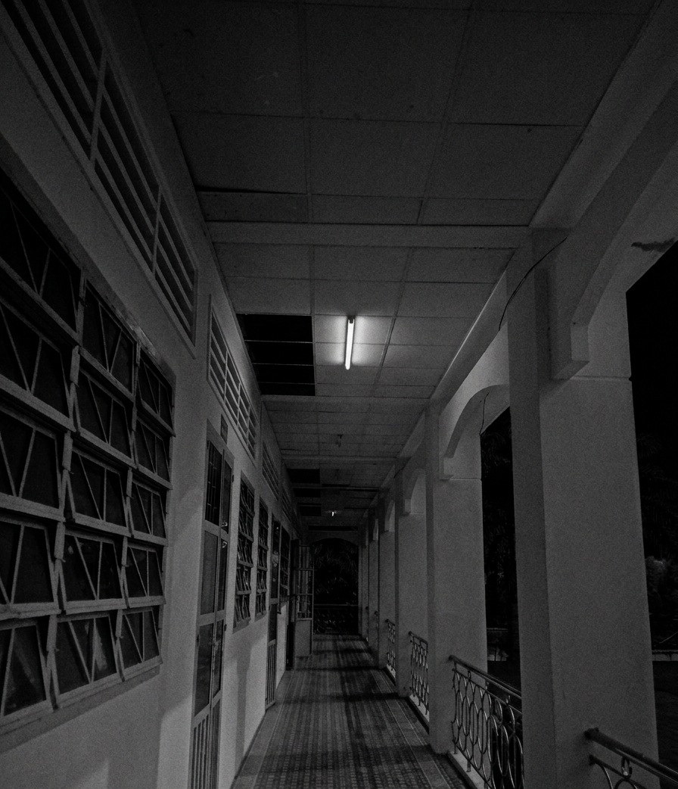
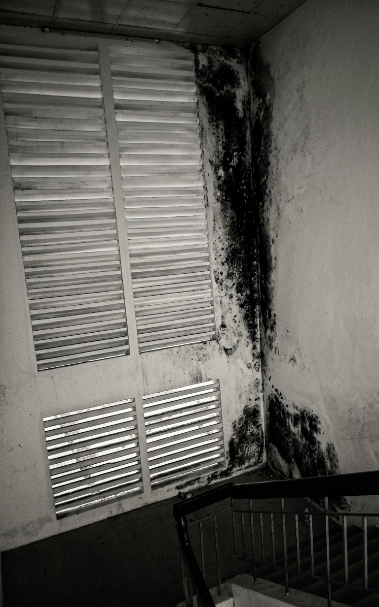

Cơ sở được cấp phép xây dựng vào đầu thập niên 90. Ban đầu, Dãy C được thiết kế làm khu vực học tập trọng điểm với các phòng thí nghiệm đặt tại tầng trên cùng. Sau nhiều thập kỷ vận hành, cơ sở đã ghi nhận nhiều tổn hại kết cấu nghiêm trọng, dẫn đến quyết định di dời toàn bộ học sinh để đảm bảo an toàn.
Mảng trần la-phông tại Tầng 2 bị bong tróc vỡ vụn, để lộ những ô trống tối om nối thẳng lên khoảng không mái tôn. Đồng thời, khu vực góc tường cầu thang bị xâm nhập nghiêm trọng bởi các vết mốc đen ngấm nước kéo dài.


Trích biên bản phỏng vấn thực địa người dân sống cạnh dãy nhà C (Thực hiện năm 2006):
Dãy nhà bỏ hoang này tầm nửa đêm là bắt đầu nghe thấy mấy tiếng động lạ lắm chú ơi.
Uu phiền nhất là mấy hôm mưa bão, nước ngấm đen hết cả mảng tường bên hông.
Ong bướm hay chuột bọ dạo đó cũng không thấy xuất hiện gần khu vực này nữa.
Im lìm được một lúc thì lại nghe như có tiếng bước chân kéo lê trên tầng ba.
Tôi có báo bảo vệ vài lần nhưng đêm đến người ta cũng chẳng dám vào kiểm tra.
Rõ ràng là có tiếng cào sột soạt kéo dài dọc theo đường ống dẫn nước.
Ai đi ngang qua đây lúc rạng sáng cũng đều phải rảo bước đi thật nhanh.
Nhìn từ bên ngoài vào chỉ thấy ánh đèn hành lang cứ chập chờn rồi tắt ngụm.
Người dân quanh đây đồn nhau có thứ gì đó đang bò ngoằn ngoèo trong bóng tối.
Hễ mỗi lần có tiếng thạch cao vỡ rơi xuống sàn là tiếng cào lại dừng lại.
Ai đời nhà cửa dột nát thế mà thứ đó vẫn nằm ẩn nấp cố định một chỗ.
Lưu ý: Tra cứu dữ liệu chuyên sâu yêu cầu nhập mật mã truy cập hợp lệ (Đã mã hóa).